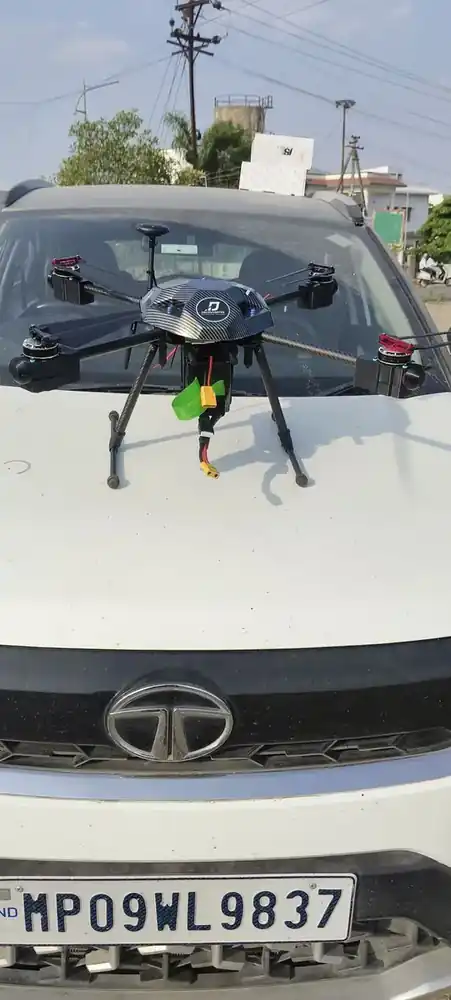

Home / Problems We Solve / No network in the field
CommunicationsHow to communicate where there is no mobile network
Remote terrain, border areas and disaster zones often have no coverage at all.
Field teams in remote areas, border regions and disaster zones.
Teams lose contact as soon as they separate or leave mobile coverage.
Mesh devices that link directly and pass messages along with no SIM or tower.
How can a team communicate with no signal?
The places where teams most need to reach each other are often the places phones do not work. Without coverage, a team can split up and lose contact completely.
Mobile phones depend on towers. In remote terrain, border areas or after a disaster, there may be none in reach, and a team that spreads out can lose contact.
A mesh device works differently. Each unit links directly to the others and passes messages along, so the group does not need a SIM, a tower or internet.
Who faces this problem
Remote field teams
Forest, mountain and rural work often runs beyond coverage.
Disaster responders
Networks can fail exactly when teams need them most.
Security patrols
Teams may want a channel that doesn’t rely on public networks.
Signs you have this problem
- Your teams regularly work beyond mobile coverage
- Groups lose contact once they separate
- Disasters or remote work leave you without a backup channel
- Your messages should not depend on a public network
What to look for
- No SIM, tower or internet requirement
- Mesh networking between units
- Encrypted messages by default
- A simple way to send messages from a phone
The main causes
Remote terrain
Mountains, forests and borders are beyond mobile coverage.
Failed networks
Disasters can take towers and power offline.
Exposed channels
Public networks are not suited to sensitive messages.
Before and after
How to solve it, step by step
- 1
Carry
Each team member carries a Sandesh device.
- 2
Link
Devices join an encrypted mesh with each other.
- 3
Pair
Connect a phone through the Sandesh app.
- 4
Message
Messages pass between units with no network.
Common mistakes
- Testing devices only in open ground, close together
- Assuming that adding units always extends coverage
- Leaving device charging out of the mission plan
- Giving teams devices without practice before they deploy
Questions to ask a supplier
- What range can we expect in our terrain?
- How many units are needed for our team spread?
- How long does a device run on one charge?
- How are messages encrypted, and who controls the devices?
What to use
Common questions
What is a mesh communication device?
It is a device that connects directly to other nearby units. Messages can hop between them, so the group covers more ground than one unit alone.
Does Sandesh need a SIM card?
No. Sandesh devices talk to each other with no SIM, tower or internet connection.
What is the range of Sandesh?
We are finalising the published specification sheet. Contact us and the engineering team will share current figures for your use case.
How does a mesh network extend range?
Each unit can pass messages to the next, so a message may hop across the group to reach someone beyond direct range.
Is a mesh device the same as a satellite phone?
No. A mesh device links to other nearby units, while a satellite phone connects through satellites. They suit different needs.
Related problems
Blind in the first hours of a disaster
After a flood, earthquake or wildfire, roads and networks may be gone and nobody knows the full picture.
Read this guideFinding missing people
Forests, hills and flooded land are slow to search on foot, and time matters.
Read this guideGPS jamming and spoofing
Satellite signals are easy to jam, spoof or block, and a drone that depends on them can drift or be lost.
Read this guideFacing this problem?
Tell us about your mission and our engineers will suggest the right platform or configuration.